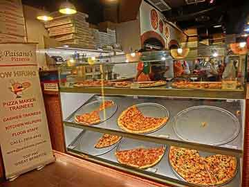

-
Build a Portfolio
Personal portfolio page using HTML, CSS, and the Bootstrap framework.
-
Interactive Resume
Resume page built using jQuery, JSON, HTML and CSS.
-
Classic Arcade Game Clone
An HTML5 Canvas web game, developed using Object Oriented JavaScript.
-

Cam's Pizzeria
Who wants a performant pizza?